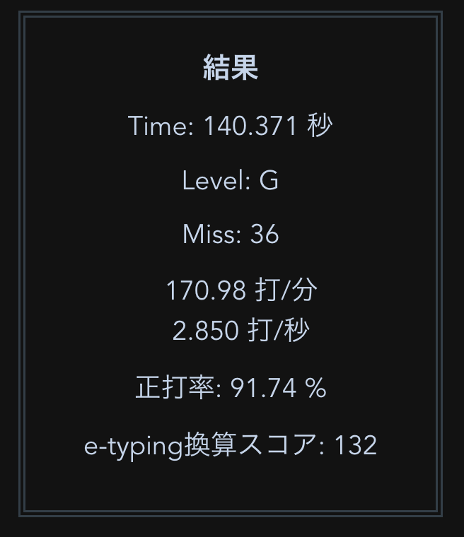

前回より結果が下がっているので載せるか一瞬ためらったものの、日々こういうこともあるので記録としてそのまま載せる。(ダークモードのための色反転はあしからず。)
気づくともうAstarteを知ってから一ヶ月以上が経っていて、時の流れは速いものだと思う。
途中何度か、他の配列に乗り換えようと思ったこともあった。例えば大西配列、Colemak-DH。
でも実際そうした別の配列に一度向き合ってみて、体験して、Keyboard Layout Analyzerで計測しては、結局戻ってきているので、性に合っているのだろうと思う。
そう思うと、もとを正せば、確かこうした配列練習記録としては かな配列として薙刀式を練習し始めたことが最初ではなかったかと記憶していて、そこからいろいろと変遷をして、今現在はローマ字配列を練習しているというのは、なんとも奇妙な巡り合わせのようにも感じる。
けれど、必然的なことのようにも思っていて、最近仕事でQwertyを打っていて、初めて仕事中もAstarte+を打ちたいと思った。
なんだろう、新下駄配列でもDvorakでも同様のことを考えたことも試したこともあるはずで、でも実際実現しなかった経緯があるのだけれど、そもそもAstarte+を練習し始めた経緯が今度こそ仕事でも新配列を使うにはどうしたらいいかというところにあったので、直感的には、今回はなんとなく実現するのではないかと思うフシがある。
多分他の練習記録をみてもわかると思うのだけれど、一ヶ月くらいでだいたい最初の伸び悩みポイントがくる。この地点で、あとは実際に毎日使っていくことで少しずつ少しずつ成熟度が上がる段階にくるので、日々の日常生活でも使っていきたいと思うのは必然的かなと思う。
ただDvorakのときが特にそうだったのだけれど、このあたりで理想と現実を一番思い知る頃でもあって、例えばDvorakのときは実際の業務ではUnixコマンドを打つのが辛かったりとか、Vimを使おうとして苦戦したり、なんだかんだQwertyに戻してしまうせいで伸び悩んだり、日本語打鍵は新下駄配列を使っていたために練習機会に恵まれずに結局はホビーでしか使わなかったりと、苦しんだ時期でもあった。
それでも、そうしたひとつひとつの気づきが今に繋がって現在のムーブメントを呼んでいるし、オリジナル版のAstarte自体もDvorakのエッセンスを多分に引き継いでいるので、無駄なことはひとつもないと感じる。
ちなみに業務で使いたくなくなるポイントのもう一点としては、打ちたい本質的なことよりも打鍵のたどたどしさが目についてしまって、二重に思考して鬱陶しく感じてしまうのがあるのだけれど、もうこれに関しては宿命であるので、どこかの段階で割り切るしかない。
そういう意味では、もし自分が本当に単なるスピード狂で、手指にどんな負荷をかけてでも高速打鍵したいだけなのであればきっとひたすらQwertyを極めているだろうし*1、手指の快適さとスピード感のバランスを求めるがゆえの通過儀礼や悩みというものは、新下駄しかり、Dvorakしかり、何かしらあるものだろうと思う。
新下駄を練習していたときは、最適な打鍵というのは記憶の負荷や導入障壁なしにはなし得ないという考えがどこかにあったのだけれど、Astarte+のようなローマ字配列を練習しているとそうした執着はなんとなく無くなってくる。
もちろん打鍵数やシフト数的には前者の考えは間違いないし、今の試みが完成したあかつきには晴れて新下駄と組み合わせて使っていこうと思うものの、ローマ字配列を使っていると、案外さほどの苦労なしに *2 そうしたことを実現することは実は可能で、EucalynやColemakのような配列の存在はありがたいと思うこのごろ。
ただこういうことを考えていると、もしQwertyだけを知っている世界線でなかったら、Colemak-DHしかり、別の結論が出るのかもしれないと思うときもあるのだけれど、Qwertyも実はとてもよく考えられていてよく出来ていると自分は思っているし、歴史の結果のような、神の見えざる手によってできあがった結果にあとからどうこういっても仕方がないので、そうした思考実験はまたの機会にする。